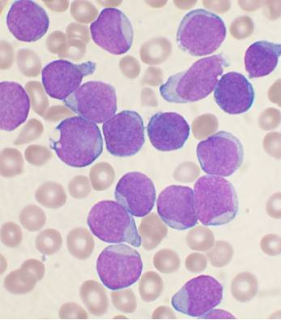

What is Leukemia and What Causes It
Leukemia is the cancer of the blood and bone marrow. It is the rapid growth of abnormal cells in the bone marrow, the blood making tissue. It suppresses the production of normal blood cells, such as red blood cells, white blood cells, and platelets. It usually results in an extremely elevated count of defective white blood cells. Normally, white blood cells account for 1% of your blood volume (around 4000-10000 cells) and are meant to fight infection. Not only are leukemia cells bad at fighting infection, they hurt the ability of red blood cells and platelets to do their jobs. This happens because leukemia causes an overproduction of blast cells. Blast cells are basically the stem cells of blood. These blast cells don't properly develop and don't mature into blood cells. These blast cells eventually outnumber normal blood cells so that they cannot do their jobs. Unlike other cancers, leukemia doesn’t form a tumor that can be found by x-rays. Leukemia starts when the DNA of a single cell in the bone marrow changes (mutation) and can’t continue to function normally. It is currently unknown what causes the initial DNA mutation, however, there are some theories. Most studies show that leukemia is hereditary. It is also said that Artificial Ionising Radiation (radiation from xray tubes and particle accelerators) can cause leukemia.